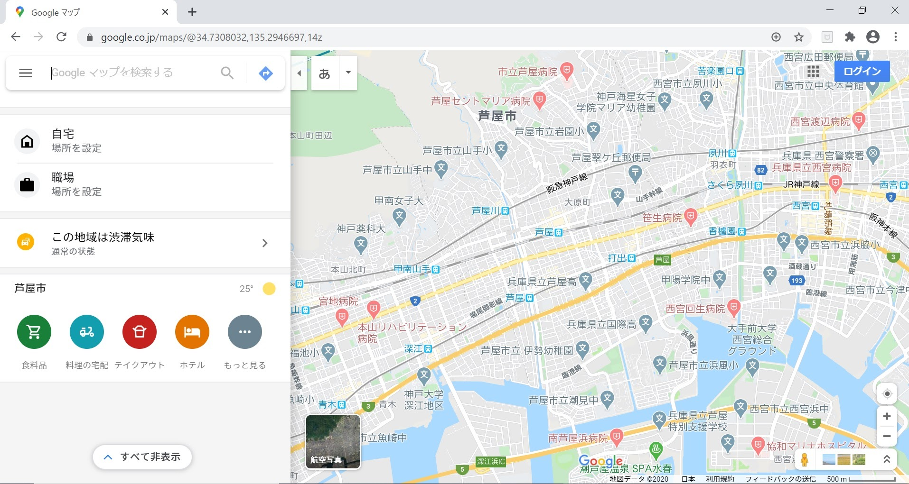
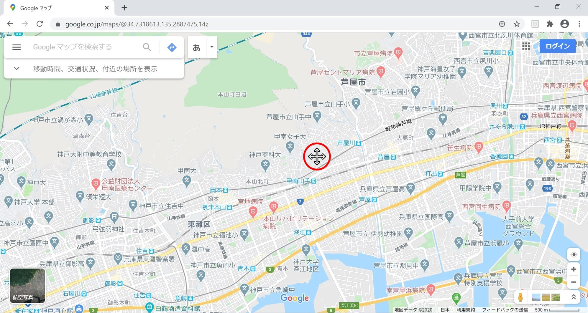
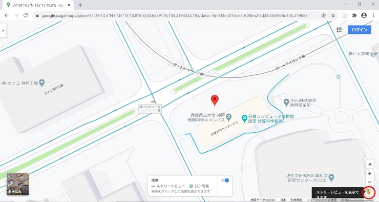
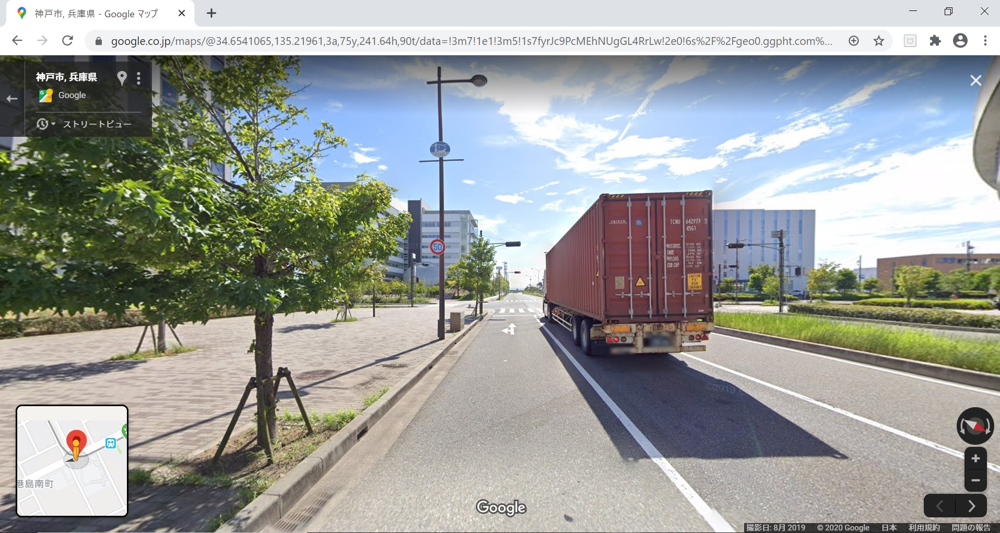
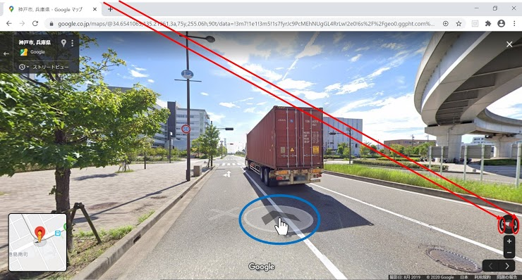
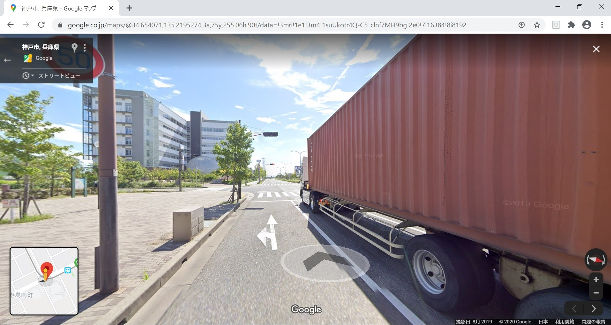

事故事案発生地点の緯度経度の確認方法とその場所の説明例
Step 1
まず、Google Mapsを開いてください。
Step 2
次に、Google Maps上で移動操作やズーム操作を行い、緯度経度を知りたい地点を表示してください。移動操作は地図上でマウスを上下左右にドラッグしてください。（次の図は上の図の時にマウスを右に動かしたもの）ドラッグ中はアイコンがクロスカーソルになります。
Step 3
ズームは赤丸の＋ボタンや－ボタン、もしくは、マウスのホイールボタンで調整できます。

Step 4
緯度経度を知りたい地点にアイコン合わせてクリックしてください。

Step 5
地点をクリックすると、画面の下の方に、場所を表すボックスが現れます。緯度経度が書かれていますので、その数字をクリックしてください。

Step 6
テキストボックスに緯度経度が書かれていますので、これをコピーして、質問1の回答欄に貼り付けてください。

Step 7
グーグルストリートビューで場所を確認する場合は、赤丸の人型のところをクリックすると以下のように水色のラインが地図上に出ます。
Step 8
上記の水色ラインの部分をクリックすると以下のような画面になります。
Step 9
赤丸の部分をクリックすると画面が回転します。また、地図上にポインタを合わせていると、青丸の中にある矢印が出て来て、クリックすると画面に映る場所を移動できます。
Step 10
青丸の中にある矢印をクリックした場合
